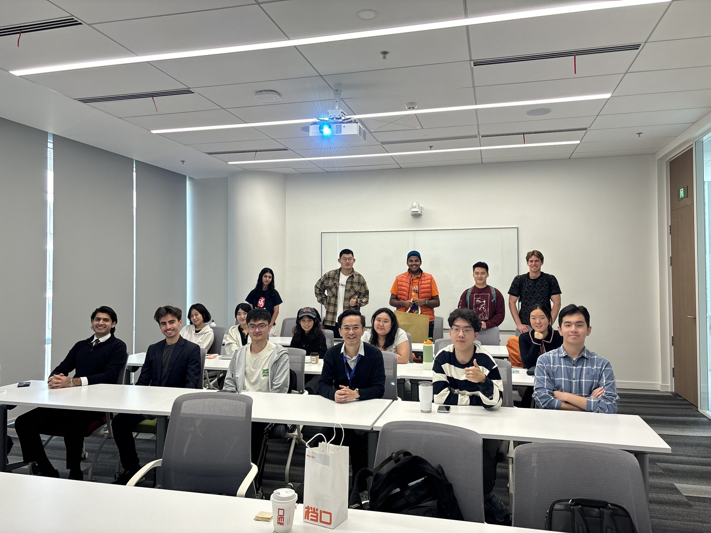

I have taught a wide range of courses in political economy, comparative politics, global China, and research methods, working with diverse undergraduate and postgraduate students in both China and the United States.
NYU Shanghai
SOCS-SHU 150 — Introduction to Comparative Politics
Undergraduate
Fall 2026 (in progress)
SOCS-SHU 331 — Politics in China
Undergraduate
Fall 2026 (in progress)
Duke Kunshan University
POLECON490 — Senior Seminar: Advanced Topics (in Political Economy)
Undergraduate
Spring 2026, Session 4
GCHINA101 — China in the World
Undergraduate
Spring 2025 and Spring 2026
POLECON302 — China’s Economic Transition
Undergraduate
Fall 2024, Spring 2025, Fall 2025
GCHINA390 — Junior Seminar: Advanced Topics (in Chinese Politics)
Undergraduate
Spring 2025, Session 4
Fudan University
IGPP817003 — Advanced Quantitative Methods
Graduate
Spring 2024. Co-taught with Dr. Xin Ye.
IGPP617006 — Political Economy of China
Graduate
Spring 2022 and Spring 2024
The Ohio State University
POLITSC4782 — Political Analysis II
Undergraduate
Fall 2018, Summer 2020, Spring 2021
POLITSC3780 — Data Literacy and Visualization
Undergraduate
Fall 2019
POLITSC4781 — Political Analysis I
Undergraduate
Spring 2019
